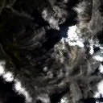

Benchmark / Near-lossless / emit-l2a-285 / emit-l2a-285-09
emit-l2a-285-09
khumbu · 2023-08-31 · sample details

Metadata
| id | emit-l2a-285-09 |
|---|---|
| source | NASA/EMIT/L2A/RFL (EMIT L2A Estimated Surface Reflectance V001) |
| asset | NASA/EMIT/L2A/RFL/EMIT_L2A_RFL_001_20230831T030641_2324302_015 |
| crs | EPSG:4326 |
| transform |
|
| datetime_start | 2023-08-31T03:06:41.000Z |
| datetime_end | 2023-08-31T03:06:41.000Z |
| bands | reflectance_0 to reflectance_284, 285 planes |
| shape | 285x128x128 |
| dtype | float32 |
| unit | reflectance |
| scale | 1 |
| offset | 0 |
| input_sha256 | 14cbb1cd814e0c2bc2efbdec5975b18e1ea75674819e6db4fd09824bb81342f8 |
| site | khumbu |
| regime | snow |
| lon | 86.85 |
| lat | 27.85 |